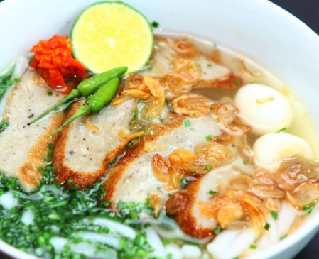

Bánh canh hẹ
100.000đ
Bánh canh hẹ là món ăn khá phổ biến ở miền Trung. Món ăn này có
xuất xứ từ người dân Phú Yên và rất được yêu thích. Với hương vị
thanh nhẹ, không nhiều dầu mỡ, thực khách có thể ăn bất kì lúc nào
trong ngày.